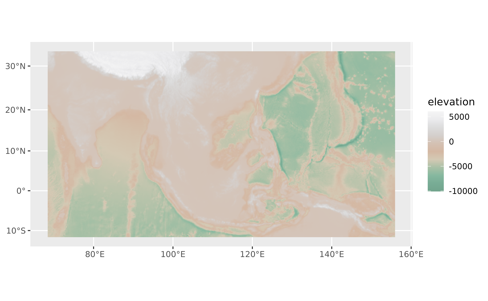
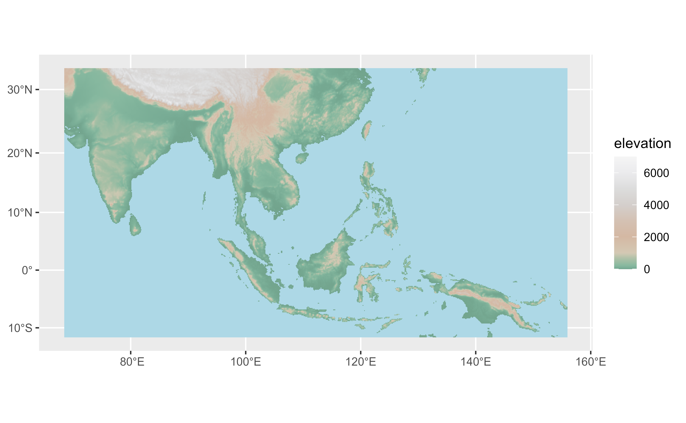

A tibble including the color map of
4 gradient palettes.
All the palettes includes also a definition of colors limits in terms of
elevation (meters), that can be used with ggplot2::scale_fill_gradientn().
Format
A tibble of 41 rows and 6 columns. with the following fields:
- pal
Name of the palette.
- limit
Recommended elevation limit (in meters) for each color.
- r
Value of the red channel (RGB color mode).
- g
Value of the green channel (RGB color mode).
- b
Value of the blue channel (RGB color mode).
- hex
Hex code of the color.
Source
Derived from:
Patterson, T., & Jenny, B. (2011). The Development and Rationale of Cross-blended Hypsometric Tints. Cartographic Perspectives, (69), 31 - 46. doi:10.14714/CP69.20 .
Details
From Patterson & Jenny (2011):
More recently, the role and design of hypsometric tints have come under scrutiny. One reason for this is the concern that people misread elevation colors as climate or vegetation information. Cross-blended hypsometric tints, introduced in 2009, are a partial solution to this problem. They use variable lowland colors customized to match the differing natural environments of world regions, which merge into one another.
See also
Other datasets:
grass_db,
hypsometric_tints_db,
princess_db,
volcano2
Examples
# \donttest{
data("cross_blended_hypsometric_tints_db")
cross_blended_hypsometric_tints_db
#> # A tibble: 41 × 6
#> pal limit r g b hex
#> <chr> <int> <int> <int> <int> <chr>
#> 1 arid 0 160 152 141 #A0988D
#> 2 arid 50 170 160 150 #AAA096
#> 3 arid 200 180 170 158 #B4AA9E
#> 4 arid 600 202 190 174 #CABEAE
#> 5 arid 1000 212 201 180 #D4C9B4
#> 6 arid 2000 212 184 163 #D4B8A3
#> 7 arid 3000 212 193 179 #D4C1B3
#> 8 arid 4000 212 207 204 #D4CFCC
#> 9 arid 5000 220 220 220 #DCDCDC
#> 10 arid 6000 235 235 237 #EBEBED
#> # ℹ 31 more rows
# Select a palette
warm <- cross_blended_hypsometric_tints_db |>
filter(pal == "warm_humid")
f <- system.file("extdata/asia.tif", package = "tidyterra")
r <- terra::rast(f)
library(ggplot2)
p <- ggplot() +
geom_spatraster(data = r) +
labs(fill = "elevation")
p +
scale_fill_gradientn(colors = warm$hex)

# Use with limits
p +
scale_fill_gradientn(
colors = warm$hex,
values = scales::rescale(warm$limit),
limit = range(warm$limit),
na.value = "lightblue"
)

# }